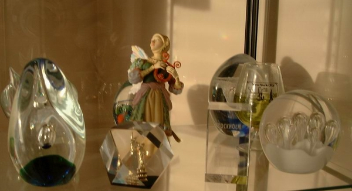
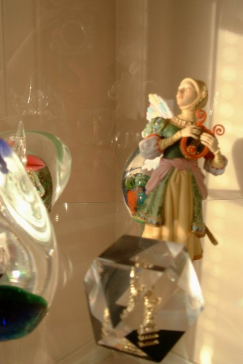
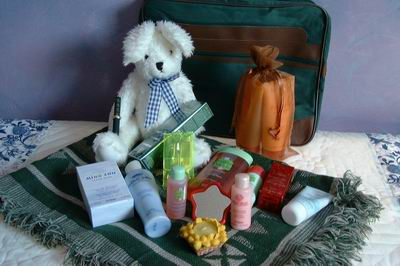

| Home | Greeting | Great land stories | Grot of poetry | Graphic album | Grandiose gadgets | Groan of the mind | Back | Next |
Страница 7. Конкурс!!! Отгадай загадки - 2003!!!
С окончанием февраля 2003г. завершился наш конкурс...
В чем сей конкурс состоял?
Хотите знать имена победителей?
Жаждете лицезреть ответы на загадки?
Напомнить сами загадки?
Желаете посмеяться?

Мелким шрифтом выделено описание конкурса:
Дорогие Друзья! Happy Valentine's Day!
Накануне этого замечательного праздника - Дня Валентина, Дня
Любви, хочу предложить вашему вниманию загадки. У меня есть традиция придумывать к Новому году загадки и
развлекать тем самым в новогоднюю ночь народ.
Почти все загадки основаны на игре слов-букв. Например, такая загадка:
Ты часто видишь меня ночью темной,
А вставишь "л", - животным сделаюсь огромным.
Ответ: сон - сЛон
И дальше в том же духе. Если точно не указывается, куда вставлять буквы или какие по счету буквы заменять другими,
это значит, что буквы сии могут быть где угодно:
в начале слова, в середине, в конце.
В чем состоит конкурс? Человек, который пришлет МАКСИМАЛЬНОЕ количество правильных ответов на загадки, получит
супер-приз, независимо от того
в какой бы части света сей остроумный победитель не находился. Более того, первых трех человек, кто пришлет
большинство правильных разгадок, ожидает
супер-бонус:
Dear friend! Should you become a winner of this contest, or should you be a part of the first
3 people who suggest the proper solutions to the most of riddles, you will
get a super-bonus - a
FREE 1-year subscription for Irina's
World website!
Ответы присылайте на адрес
. Просто указывайте номер загадки и Ваш ответ. Ответ, как правило, состоит
из двух и более слов, завуалированных в загадке, хотя в некоторых случаях может представлять только одно слово,
тем более что не каждая загадка связана с игрой букв.
В своем письме Вы можете также привести ассоциативный ряд, подтолкнувший Вас к разгадке. И я буду очень
признательна, если Вы укажете, какая загадка Вам
больше всего понравилась. Таким образом, это будет конкурс и для меня тоже :). В процессе разгадывания Вы и сами
можете напридумывать кучу загадок
подобного типа. Вы их также можете прислать. Я с радостью опубликую Ваше авторское творчество, и вслед за текущим
конкурсом мы сможем устроить новый - на лучшую загадку!

Правильные ответы и
имя победителя будут анонсированны на этой же страничке! Игра будет иметь продолжение либо до тех пор, пока я не
получу 3 первых письма со всеми правильными ответами, либо до
конца февраля 2003 года. В последнем случае победителем будет назван тот, кто первым пришлет максимальное
количество правильных отгадок. Свой адрес Вы можете сообщить
сразу же, в письме с ответами. В противном случае, я обязательно дам Вам знать о том, что Вы выиграли этот конкурс
и самолично запрошу Ваш адрес.
Warning 1: Прошу прощения, но некоторые загадки не совсем приличны. :-) Просьба отнестись
к этому делу с юмором и не поминать меня лихом.
Warning 2: Людей, дорогих сердцу друзей, которых мы имели счастие лицезреть в Новогоднюю
ночь, очень прошу не присылать ответы и не подсказывать
остальным участникам конкурса. Вы уже отгадали все эти загадки и получили свои новогодние подарки :-).
Warning 2: Загадку №4 разгадывать не обязательно. Во-первых, в ней содержится ошибка, а,
во-вторых, люди, проживающие вне Канады, вряд ли
способны эту загадку разрешить. Таким образом, при подсчете ответов она учитываться не будет!
Дорогие читатели! Мы с мужем желаем всем вам крепкой, красивой, бесконечной, независимой Любви!!! Любовь - это
высшее счастье, высшее благо!
Будьте счастливы, друзья! Любите и будьте любимы! Во всем успехов вам! И, главное, в нашем конкурсе! Я с
нетерпением жду ваших ответов. Наслаждайтесь и ловите фан! :-)
С уважением, любовью и признательностью,
Наташа
Прежде всего, огромное спасибо ВСЕМ участникам конкурса! (Хотя, признаться, их было не так уж и много.) Я искренне
надеюсь, что своими загадками доставила Вам радость и,
может быть, даже кому-то подняла настроение. К тому же я очень люблю дарить людям подарки, поэтому абсолютно всем во
глубине души своей желала выиграть супер-приз. Однако, приз только один,
- и он заслуженно достанется победителю. Вакансий на бесплатную подписку на Irina's World.com тоже всего лишь 3. Я
сожалею, что некоторые из Вас, несмотря на активное участие в конкурсе,
не получат ничего. Но... конкурс есть конкурс. Хочется верить, что в следующий раз Вам повезет куда больше.
Обидно также за тех, кто проигнорировал участие в конкурсе. Я знаю, сколько людей читают наш с Андрюшей сайт, и мы
получаем массу писем от будущих эмигрантов в Канаду.
Не говоря уже о призе за первое место, подписка на Irina's World website дала бы им огромный шанс поупражняться в
английском языке и узнать множество интересных и полезных
вещей о Канаде. Но,.. как говорится, наше дело предложить, - Ваше дело отказаться.
Итак, - победители конкурса! В нижеприведенной таблице (это не тетрис :))
указываются имена трех участников конкурса, которые прислали максимальное количество
разгадок и, соответственно, стали победителями.
Цвета означают:
-
Правильная разгадка
-
Неправильная разгадка или
отсутствует
#
Победители
Город
1
2
3
4
5
6
7
8
9
10
11
12
13
14
15
16
17
18
19
20
21
22
23
24
1
Ольга и Артем Алексеенко
Хьюстон
2
Анастасия Просянко
Новосибирск
3
Инна Мариевская
Москва

Как Вы легко можете видеть из таблицы, на первое место вышла семья Алексеенко из города Хьюстон, Ольга и Артем! Они
просто превзошли самое себя и умудрились отгадать абсолютно ВСЕ
загадки!!! Будучи биологами, они разгадали даже "изоморфизм", в то время как обыкновенный "паук" (или паук
обыкновенный? :-)) пришел им на ум в самую что ни на есть последнюю очередь.
Ольга и Артем получат обещанный супер-приз - набор косметических и других продуктов от
Yves Rocher общей стоимостью более $100!
Второе место заняла Анастасия Просянко из Новосибирска, а третье место досталось Инне Мариевской из Москвы. Их, так
же как и семейство Алексеенко,
ожидает супер-бонус - бесплатная годовая подписка на Irina's World website!
Irina's World website - это действительно то место, где встречаются красота
и знание! Это, - своего рода, электронный журнал (представляющий множество регулярных выпусков),
содержание которого охватывает более 40 категорий, включая такие аспекты, как мода, красота, жизненный стиль, досуг,
развлечения, путешествия, история, культура и искусство.
На сайте Вы сможете узнать о разных выдающихся личностях, познакомиться с занимательными фактами, событиями и
новостями, прочесть о различных праздниках и их происхождении,
получить рекомендации относительно произведений классики в областях литературы, музыки, театра и кино. В каждом из
выпусков Ирина представляет ту или иную страну мира, и Вы
вместе совершите виртуальный тур по этой стране: проникните в глубь истории, восхититесь культурными достижениями,
посетите интереснейшие места. Кроме того, сей сайт тронут
некоей канадской спецификой, или даже, торонтовской, - то есть наряду с глобальными темами Ирина дает достаточно
много информации о достойных посещения местах (в городе и стране),
грядущих выставках, театральных представлениях и мюзиклах, а также о приличных ресторанах и самых хороших магазинах
и моллах. Я знаю Ирину лично. Это - очень образованный,
культурный и, по чеховскому определению, всецело прекрасный человек! Она очень серьезно готовится к каждому выпуску
своего издания, перерабатывая фантастическую массу информации.
Каждый человек найдет на Irina's World нечто интересное для себя и постигнет много нового.
Дорогие призеры! Нам требуется Ваше подтверждение!
, свой e-mail адрес, на который Вы желали бы получать аннонсы о новых выпусках Irina's World.com
Примечание.
Irina's World.com - англоязычный сайт, информация на коем, однако, преподнесена весьма легким и общечеловечески
доступным АНГЛИЙСКИМ языком. Если Вы не знаете английского и
не желаете знать, не имеете цели в оном упражняться, или если все вышеописанное о сайте Вас ни в коей мере не
привлекает, Вы можете отказаться от бесплатной подписки на
Irina's World.com. Просто отправьте мне
с соответствующим текстом, и я не стану лишний раз напрягать Ирину в отношении Вашей персоны. Это нормально,
поверьте! Просто
если Вы никогда не будете заходить на указанный сайт, то Вам не нужны и регулярные аннонсы касательно выпусков
данного журнала.
Загадка № 1
Да, с буквой "у" я выгляжу ужасно.
От ужаса просто в глазах темнеет.
Убейте "у", - и стану я прекрасна.
Неважно, любите меня иль нет,
Но всяк в душе лелеет мой портрет.
И всяк меня по-своему имеет.
Загадка № 2
На мне вы можете порезать лук,
К салату покромсать петрушку.
Но "д" на "т" замените вы вдруг,
- Не видеть вам, друзья, пирушки.
Страданьям вашим не найти конца.
И тень не сходит с вашего лица.
Загадка № 3
Девелоперам строю я гримасы.
Компьютер за свою меня сочтет.
Про что же я, друзья? Про меру массы,
Которой мерите питье на Новый год.
Загадка № 4 - не учитывается!!!
Даровано я людям, видно, Богом.
И вот с тех пор, друзья, всегда качусь.
Воткните "л" перед последним слогом,
- В зелененький салатик превращусь.
Загадка № 5
Мой первый слог весьма не гож,
Вернее, то, чего он значит.
Последний слог невзрачен тож
И вряд ли принесет удачу,
Заставив дергаться, как псих.
А в середине - просто "тема".
О чем та тема? Этот стих?
Узнать вам будет не проблема,
Хотя одну припомнив теорему.
Загадка № 6
Я - слово есть одно,
Но два моих значенья.
Все дело в постановке ударенья.
Одно из них - дворец, огромный дом.
А дабы вам спокойно жилось в нем,
Значение на ум придет иное:
От вора спрятаться - стремленье не дурное.
Загадка № 7
Мое начало - орган надо ртом.
Конец - это чем водку запивают.
Стоять могу я редко, - лишь при том,
Когда меня подолгу не стирают.
Загадка № 8
Я - беленькая, мелкая, летучая.
Я красотою обладаю жгучею.
Глава моя брильянтами увенчана.
Живет во мне украинская женщина.
Загадка № 9
Приставка из 2-х букв дает вам инструмент,
Которым сможете вы что-нибудь надуть.
Перенесете буквы to the end,
Смогу нечаянно вас шишкой долбануть.
А неизменны здесь 3 буквы. Поглядите!
Это они кричат вам: "Помогите!"
Загадка № 10
Художественное во мне начало...
Так студии в России именуют.
А в середине наркоты немало,
- И боли мое тело не волнуют.
Я виден сквозь физматовскую призму.
Хотя конец мой чем-то сходен с клизмой.
Загадка № 11
Он есть сети администратор,
Что ловит всякий спам.
Он порет брюхи, как секатор,
Тем, кто мешает нам.
Мужчина - быстрый, ловкий, дельный.
А ноги - просто обалденны!
Загадка № 12
Когда я, братцы, с буквой "и",
Я волоски лишь истребляю.
Когда я с "а", мои враги
Покруче. Жизнь побереги
И не кажи своей ноги
В мои владенья... Расстреляю.
Загадка № 13
Он есть связной меж Богом и народом.
Добавишь "а" в конце, - тогда уж сроду
То место пред людьми не обнажишь,
Коль совестлив и перед Господом дрожишь
И коли искренне сим местом дорожишь.
Загадка № 14
Неполный я кочан капусты.
(Хоть с буквой "е" там и не густо.)
Еще добавьте голос тусклый...
Но несмотря на эти беды,
Конец-то мой от сердцееда...
Ах да, забыл, еще я еду.
Загадка № 15
Я - часть того, чего дают нам птицы.
Родительный падеж лишь примени.
А если ударенье изменил,
Я стану тем, что кушают лисицы.
Да, кстати, а соратница моя
Летала в космос. Впрочем, как и я.
Загадка № 16
Предназначаюсь я все больше для тепла.
И чаще женщинам одеждою служу.
А если б вместо "о" там "а" была
И "н" в конце, - охотно удружу
Мужам достойным времени Петра...
Да, мужики, прошла сия пора.
Загадка № 17
Она, как конфетка, только без "к",
И в пищу не годна наверняка.
Но женщины все же ее поглощают
И к этому делу мужчин приобщают.
Загадка № 18
Во мне есть имя композитора известного.
Часть тела есть во мне, к лицу уместная.
Коль приуменьшить эту часть да приласкать,
Да "о" на "а" в конечном счете поменять,
То стану я растением съедобным,
- Не то чтоб вкусным, но весьма удобным.
Загадка № 19
Без "в" в конце я просто тела часть.
А с "в" я то, куда она должна попасть.
Загадка № 20
Он с "м" - всех краше во сто крат.
А вот без "м" - увы, ползучий гад.
Загадка № 21
На букву "п" меня начните, -
И два шара всегда при мне.
Теперь на "т" ее смените
И в середину "н" воткните, -
Останусь при одном шаре.
Загадка № 22
Коли две буквы слева приплетете,
Я функцией останусь, хоть другой.
Но коли сзади усик оторвете, -
Навеки потеряю смысл свой.
Загадка № 23
Без "л" - ничто я, просто слово,
А если с "л", то - зверь здоровый.
А если "л" на "т" сменить,
Я жалобно смогу заныть.
Загадка № 24
Когда он с "к", - людей, подлюка, мочит.
Когда он с "д", - продать чего-то хочет.
А буква "л" лишь голову морочит.
Отгадки!!!
Буквы или сочетания букв, заключенные в квадратные скобки [...], подлежат
удалению, дабы в конечном итоге получилось нужное слово.
Буквы, представленные в красном цвете, - либо взаимозаменяемые, либо дополнительные для образования нового слова,
либо ударные.
| 1. | родина - Уродина |
| 2. | Доска - Тоска |
| 3. | про грамм => программа |
| 4. | Дурная загадка, - не учитывается: колесо - колсло |
| 5. | мат, "тема", тик => математик |
| 6. | зАмОк |
| 7. | нос, сок => носок |
| 8. | снеЖИНКА |
| 9. | на-SOS-на => НАсос, сосНА |
| 10. | изо[-студия], морф[ий], [кл]изм[а] => изоморфизм |
| 11. | паук |
| 12. | брИтва - брАтва |
| 13. | попА |
| 14. | вило[к] (только с буквой Е вместо И), сип, [сердце]ед => велосипед |
| 15. | белок, белкА, Белка и Стрелка => белка |
| 16. | кОфта - кАфтаН |
| 17. | помад[к]а |
| 18. | Петр [Ильич Чайковский], ухо - ушкО - ушкА => петрушка |
| 19. | рука - рукаВ |
| 20. | Муж - уж |
| 21. | Пенис - ТенНис |
| 22. | синУС - КОсинУС |
| 23. | сон - сЛон - сТон |
| 24. | КиЛЛер - ДиЛер |
Желаете посмеяться?!
Дорогие участники конкурса! Некоторые Ваши разгадки были настолько прикольными и
вместе с тем милыми, что я не могу удержаться, дабы не
поместить их в этом крохотном уголочке. Анонимно, естественно. Я думаю, Вы не будете против, если эти маленькие
прикольчики доставят людям немного здорового смеха. ;-)
Приколы приведены в следующей форме: номер загадки - "текст конкурсанта" - мой комментарий.
Загадка 8.
"Наташенька (нет, правда, к тебе очень подходит это определение! :))) будет жаль, если я не права)"
- Жаль, но не права :)). Мне, конечно, льстит подобное определение, но... мелкой я себя не
считаю, летать пока не научилась, беленькая головушка выкрашена в медно-красный цвет,
до жгучей красавицы мне далековато :), а брильянтами, которыми меня одарил мой дорогой супруг в бытность нашего
финансового взлета, все равно всю голову не увенчаешь. К тому
же украинка я всего лишь на 25% (и еще на 25% - казачка).
Загадка 11.
"Видимо, админ ваш... :)))"
- Нешто я, при живом-то муже (со что ни на есть обалденными ногами), буду воспевать какого-то
там админа! К тому же от последнего, порющего брюхи, я бы лично держалась как
можно дальше. Вдруг помешаю? ;-)
Загадка 11.
"У нас есть подозрение, что это security или какой-нибудь телохранитель, но мы не настаиваем на этом ответе
:))."
- М-да... Еще скажите, что на "Кевине Костнере" вы тоже не настаивали! :)) Я, конечно, очень
люблю этого актера, но вряд ли его можно сравнить... с пауком. С другой стороны,
паук, - на мой взгляд, самое наименее мерзкое насекомое. Я стараюсь никогда не убивать пауков и искренне радуюсь,
когда вижу в их сетях кучи мушек и других противных тварей
(да простит меня Господь!). Поэтому для меня лично паука вполне можно рассматривать как телохранителя, хотя он сам
об этом и не догадывается :)).
Загадка 11.
"Кажется, я отгадала - это ПАУК!!!!! Только вот почему ноги обалденные?? Может, потому, что отряд этих животных
называется "членистоногие"? :))))"
- Насчет названия "членистоногие" я как-то не подумала :), а зря, - весьма хорошая
мысль!!! ...Да еще и отряд!.. ;-) Просто я предполагала, что
мое замечание о ногах как-то может приблизить к разгадке: все-таки ноги по-истине длинные, потом - сколько их!!!
Одно слово, - обалденные ноги! :)))
Загадка 12.
"брИтва - брАтва (хотя я сначала в эпиляторе пыталась буквы менять :))"
- Ну... не лишено смысла, между прочим. Судя по содержанию Х-файловского сериала, вполне можно
было придумать что-нибудь типа военного изолятора. ...Вертолеты, автоматы,
пулеметы... Одним словом, ноги своей туда не кажи :).
Загадка 15.
"белка (со Стрелкой, правда, я не уверена, что лиса питается бЕлками, она ведь не умеет лазить по деревьям
:)).)"
- :)) Что сказать? - Я - не биолог. У меня просто возникла ассоциация с детскими сказочками:
Лисой Патрикеевной там, зайчиками, медведями. Хотя я предполагаю, будь у лисицы
возможность словить белку на земле, рыжая хитрюля не побрезговала бы подзакусить ;-).
Загадка 18.
"петрушка (если бы мы не знали про твою любовь к П.И.Чайковскому, отгадать было бы сложнее.)"
- Многие не знали, но отгадали. Тем более, что Бетховена я люблю даже больше ;-).
Загадка 20.
"муж - уж (между прочим, очень безобидное создание.)"
- Ага... Которое из двух?..
Загадка 21.
"a это - самая дремучая для меня загадка... :)"
- Осведомитесь у безобидн... тьфу... мужа :) Он уж наверняка подскажет правильный ответ.
| Top | Home | Greeting | Great land stories | Grot of poetry | Graphic album | Grandiose gadgets | Groan of the mind | Back | Next |